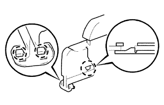
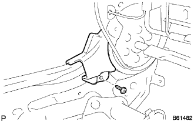
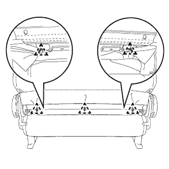

フロントシートASSY RH 組み付け |
| 1. フロントシート クッション シールド LWR RH取り付け |
|  |
ツメをかん合させ、フロントシートクッションシールドLWR RHを取り付ける。
| 2. フロントシート クッション シールド LWR LH取り付け |
ツメをかん合させ、フロントシートクッションシールドLWR LHを取り付ける。
| 3. リクライニング アジャスタ インサイドカバー RH取り付け |
リクライニングアジャスタインサイドカバーをかん合させる。
|  |
スクリューで、リクライニングアジャスタインサイドカバーRHを取り付ける。
| 4. リクライニング アジャスタ インサイドカバー LH取り付け |
リクライニングアジャスタインサイドカバーをかん合させる。
スクリューで、リクライニングアジャスタインサイドカバーLHを取り付ける。
| 5. リクライニング アジャスタ インサイドカバー RH (RH シート ヨウ)取り付け |
リクライニングアジャスタインサイドカバーをかん合させる。
 |
スクリューで、リクライニングアジャスタインサイドカバーRH(RHシートヨウ)を取り付ける。
| 6. リクライニング アジャスタ インサイドカバー LH (RH シート ヨウ)取り付け |
リクライニングアジャスタインサイドカバーをかん合させる。
スクリューで、リクライニングアジャスタインサイドカバーLH(RHシートヨウ)を取り付ける。
| 7. バーチカル アジャスタ スペーサ取り付け |
 |
ツメをかん合させ、バーチカルアジャスタスペーサを取り付ける。
| 8. フロントシート クッション カバー＆パッド RH取り付け |
シートクッションカバー & パッドをフレームにセットする。
クッションカバー前部のJフックを確実にかん合させる。
フロントシートフレームRHのクッションフレーム部のパネルツメを折り返す。
ホグリングプライヤーを使用して、フロントシートクッションカバー & パッドRHを新品のホグリングで取り付ける。
| 9. フロントシートバック パッド(カバー ツキ) RH取り付け |
|  |
ホグリングプライヤーを使用して、フロントシートバツクカバー & パッドRHを新品のホグリング5個で取り付ける。
| 10. フロントシートヘッドレスト サポート取り付け |
 |
シートバツクにフロントシートヘッドレストサポート2個を取り付ける。
| 11. フロントシートバック フック取り付け |
 |
ツメをかん合させ、フロントシートバツクフックを取り付ける。
フック部を起こし、スクリューを取り付ける。
| 12. フロントシート インナベルトASSY RH取り付け |
ボルトで、フロントシートインナベルトASSY RHを取り付ける。
ワイヤハーネスのクランプを取り付ける。
| 13. フロントシート クッション シールド INN RH取り付け |
クッションシールドのツメをかん合させる。
スクリューでフロントシートクッションシールドINN RHを取り付ける。
| 14. フロントシート クッション シールド RH取り付け |
クッションシールドのツメをかん合させる。
スクリューでフロントシートクッションシールドRHを取り付ける。
| 15. リクライニングアジャスタレリーズ ハンドル RH取り付け |
ツメをかん合させ、リクライニングアジャスタレリーズハンドルRHを取り付ける。
| 16. バーチカル アジャスタ ハンドル RH取り付け |
シートアジャスタ部にバーチカルアジャスタハンドルを取り付ける。
スクリュー2本を取り付ける。
| 17. バーチカル アジャスタ カバー RH取り付け |
ツメをかん合させ、バーチカルアジャスタカバーRHを取り付ける。
| 18. シート アームレストASSY C LH取り付け（アームレスト装着車） |
 |
ボルトで、シート アームレストASSY C LHを取り付ける。
| 19. シート アームレスト キャップ NO.1取り付け（アームレスト装着車） |
 |
ツメをかん合させ、シート アームレスト キャップ NO.1を取り付ける。
| 20. フロントシート ヘッドレストASSY取り付け |
フロントシートヘッドレストASSYを取り付ける。
| 21. フロントシート レッグASSY RH取り付け |
ナット2個で、フロントシートレッグASSY RHをフロントシートレッグカバーと共にフロントシートASSY RHに取り付ける。
| 22. RHシート フロントシートトラック ブラケット LWR RR RH取り付け |
 |
ナット4個で、左右のフロントシートトラックブラケット,LWR RR RHをフロントシートASSY RHに取り付ける。